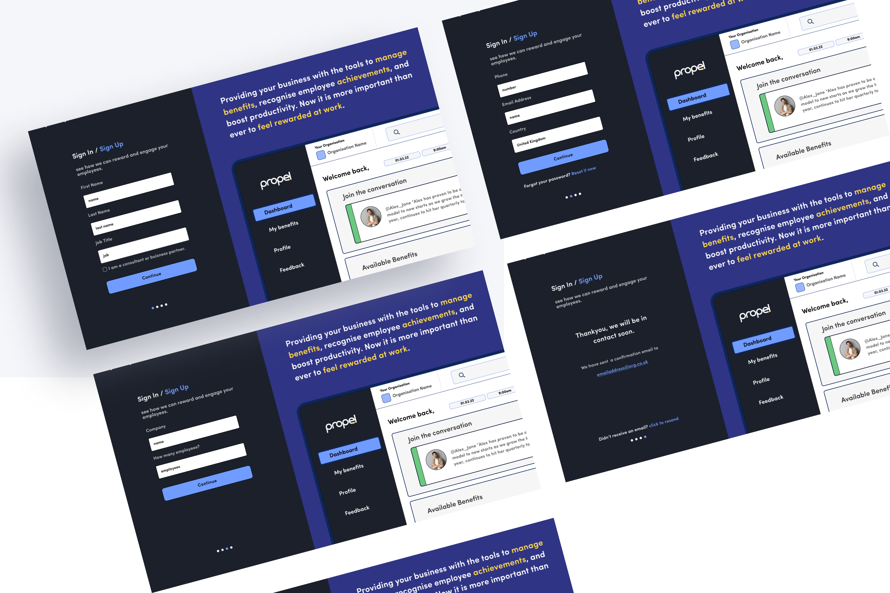
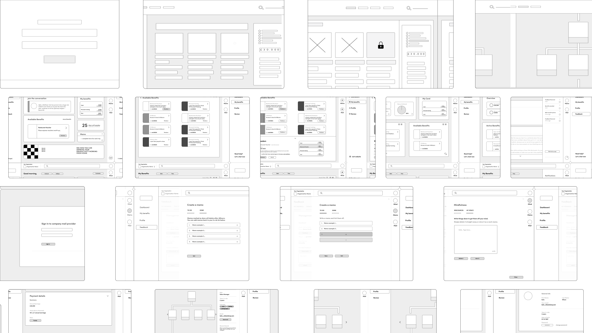
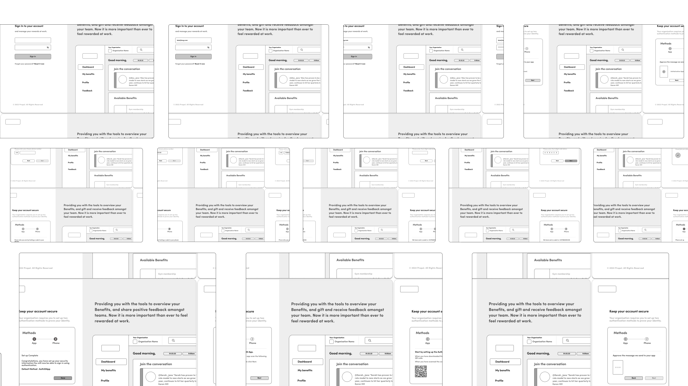

Propel
Propel is an employee reward and recognition application designed to improve productivity and engagement in work.
Skills: UX research, wireframing, prototyping, usability-testing,
The Brief
For my final year university project I designed an employee reward and recognition application used to improve productivity and motivation in any given workplace. The COVID19 Pandemic has pushed the importance of supporting employees during troubled and uncertain times. The application, Propel, targets businesses who aim to improve the productivity and motivation of their employees through rewards and recognition for their role within the company. Users will be able to manage their bonuses, understand how they can progress, and utilise feedback between themselves, management, and fellow employees.
Discover
I started sketching out basic frames for Propel, then moved on to designing very lo-fidelity screens.
Define and Develop
Admin
I created sign-up screens for the admin who will be at the forefront of purchasing Propel. The admin design was not a core focus when designing this product, but I thought it was very important to consider the HR side of the design aswell.
Error Prevention
I designed a user flow for error prevention, looking at what happens when a user submits data (in this case feedback), then decides they have made a mistake, etc. This was important as error prevention is a key way to make a user feel comfortable and confident when using an application.
First Time User Experience
First time user experience design, faciilitates a new user when using a product that is un-familiar to them. I wanted to make sure that users of propel had the option to be guided through the product without being left in the dark. This is important as Propel deals with handling users financial credit of bonus's and confidential information such as feedback to management. Therefore being sure that the user understands how to use the product with confidence is key!

Authentication
All first time users of Prope will be taken through a authentication set-up. This will then become an easy way to verify users identity, and keep data secure in future sign on.
Hi-Fidelity Screens
From lo-fi to hi-fi. My colour scheme ranges from darker blue to brighter pops of colour.

Outcome
The final outcome for propel included:
- Hi-fidelity Prototype
- Promotional Website
- Launch Strategy-(including marketing, social media)
- lots of lo-fi exploration
- A publication booklet about creating Propel